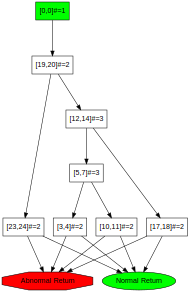

OPAL is a versatile bytecode engineering framework that offers you mulitple mechanisms to create .class files.
The following examples can be executed using the Scala console. Start sbt in OPAL's main folder, change to the project project OPAL-DeveloperTools and start the console.
The bytecode assembler framework provides a lightweight eDSL to engineer Java class files. It still requires some understanding of Java bytecode (e.g., the name of the constructor is always <init>), but makes the writing of a method's implementation much more trivial since it is no longer necessary to explicitly think about the precise program counters and the precise layout of the code array. Instead of program counters, labels (Scala Symbols) are used to mark jump targets. Additionally, the code can be annotated and that information is automatically extracted and can later be used.
The following is a first example, where we create a class called Test which defines a default constructor.
import org.opalj.ba._; import org.opalj.br._ ; import org.opalj.br.instructions._;
val cb = CLASS(
accessModifiers = PUBLIC SUPER,
thisType = "Test",
methods = METHODS(
METHOD(PUBLIC, "<init>", "()V", CODE(
// The following instruction is annotated with some meta information
// which can later be used; e.g., to check that some static analysis
// produced an expected result when this instruction is reached.
ALOAD_0 → "MarkerAnnotation1",
INVOKESPECIAL("java/lang/Object", false, "<init>", "()V"),
RETURN → "MarkerAnnotation2"
))
)
)
cb is a (reusable) builder for a class file. To actually create the ".class" file, the da.ClassFile object has to be built and then serialized.
val (daClassFile,codeAnnotations) = cb.toDA()
val rawClassFile : Array[Byte] = org.opalj.bc.Assembler(daClassFile)
The rawClassFile can then be written to the disk using, e.g., java.nio.file.Files.write(<PATH>,rawClassFile) or (e.g., for testing purposes) can be passed to an in memory class loader (org.opalj.util.InMemoryClassLoader) and immediately be instantiated and executed. The codeAnnotations can then be further processed arbitrarily.
If your class file doesn't define a default constructor, the DSL will automatically add it when required. I.e., the default constructor is created, when you define a regular class - not an interface –, the supertype is specified and no other constructor exists.
Creating a marker interface is trivial as shown next:
val cb = CLASS[Nothing](accessModifiers = ABSTRACT INTERFACE, thisType = "MarkerInterface1")
Do not forget that an interface always has to be
ABSTRACTand - if we don't define methods - the returned code annotations have to be explicitly specified asNothing.
Fields are simply created using FIELD as shown next. The type of a field is defined using a field descriptor.
val cb = CLASS[Nothing](
accessModifiers = SUPER PUBLIC, thisType = "org/example/FieldClass",
fields = FIELDS(
FIELD(FINAL PUBLIC, "publicField", "I"),
FIELD(PRIVATE, "privateField", "Z")
)
)
Jump targets are specified using labels directly before the instruction which is the jump target. These labels are then used in branch instructions to identify the branch target.
val cb = CLASS(
accessModifiers = PUBLIC SUPER, thisType = "TestJump",
methods = METHODS(
METHOD(PUBLIC, "returnInt", "(I)I", CODE(
GOTO('IsZero_?),
'Else,
ILOAD_1,
IRETURN,
'IsTwo_?,
ILOAD_1,
ICONST_2,
IF_ICMPNE('Else),
ICONST_2,
IRETURN,
'IsOne_?,
ILOAD_1,
ICONST_1,
IF_ICMPNE('IsTwo_?),
ICONST_1,
IRETURN,
'IsZero_?,
ILOAD_1,
IFNE('IsOne_?),
ICONST_0,
IRETURN
))
)
)
Making the control-flow graph explicit is possible using the CFGFactory to create the CFG and to then to transform it to an SVG.
val (br,_) = cb.toBR val cfg = org.opalj.br.cfg.CFGFactory(br.methods.tail.head.body.get) val svg = org.opalj.graphs.dotToSVG(cfg.toDot) org.opalj.io.writeAndOpen(svg,"CFG",".svg")
To specify exception handlers use TRY, TRYEND and CATCH in combination with labels.
val (attributeMethodClass, _) = CLASS(
accessModifiers = PUBLIC, thisType = "MethodWithExceptionHandling",
methods = METHODS(
METHOD(
PUBLIC, "tryCatchFinallyTest", "(I)I", CODE(
ICONST_1,
ISTORE_2,
TRY('Try1),
TRY('FinallyTry2),
TRY('LastPCTry3),
ILOAD_1,
IFGE('tryEnd),
NEW("java/lang/Exception"),
DUP,
INVOKESPECIAL("java/lang/Exception", false, "<init>", "()V"),
ATHROW,
'tryEnd,
TRYEND('Try1),
GOTO('finally),
CATCH('Try1, "java/lang/Exception"),
POP,
ICONST_0,
ISTORE_2,
TRYEND('FinallyTry2),
GOTO('finally),
CATCH('FinallyTry2),
CATCH('LastPCTry3),
POP,
'finally,
ILOAD_1,
IFLE('return),
ICONST_2,
ISTORE_2,
'return,
ILOAD_2,
IRETURN,
TRYEND('LastPCTry3)
)
)
)
).toDA()
The eDSL provides explicit support for adding line numbers in line. Just add a LINENUMBER before the instruction which should be associated with the line number.
val (attributeMethodClass, _) = CLASS(
accessModifiers = PUBLIC, thisType = "MethodWithLineNumbers",
methods = METHODS( METHOD(
PUBLIC, "<init>", "()V", CODE(
LINENUMBER(0),
ALOAD_0,
LINENUMBER(1),
INVOKESPECIAL("java/lang/Object", false, "<init>", "()V"),
'return,
LINENUMBER(2),
RETURN
)
))
).toDA()
The DSL interacts seamlessly with the bytecode representation and all attibutes can always be added to the attributes as expected. For example, the following class file is marked as being Synthetic and the origin is set using SourceFile("..."). The method is marked as being Deprecated and as throwing the exceptions java.lang.Exception. In the last case, we use the DSL's EXCEPTIONS table builder. It enables us to just specify the names of the exceptions. Alternatively, it would have been possible to directly create the underlying br.ExceptionsTable using ObjectTypes.
val cb = CLASS(
accessModifiers = PUBLIC SUPER,
thisType = "SimpleMethodClass",
methods = METHODS(
METHOD(
FINAL.SYNTHETIC.PUBLIC, "testMethod", "(Ljava/lang/String;)Ljava/lang/String;",
CODE(ACONST_NULL, ARETURN),
Seq(EXCEPTIONS("java/lang/Exception"), Deprecated)
)
),
attributes = Seq(SourceFile("ClassFileBuilderTest.scala"), Synthetic)
)
Instead of creating a ClassFile using the eDSL it is also possible to directly create the bytecode using the default representation. Every br.ClassFile can be converted to a daClassFile using org.opalj.ba.toDA(<br.ClassFile>) and can then be serialized as shown above.
This representation gives you full control over every single bit and is extremely fast, but requires a very deep understanding of Java bytecode. Actually, the other approaches use this representation as the target.
Defining an interface with a (Java 8) default method which calls another static method.
import java.nio.file.{Files,Paths}
import org.opalj.bi._
import org.opalj.da._
import org.opalj.bc.Assembler
val cf = ClassFile(
Array[Constant_Pool_Entry](
/* 0 */ null, // must be null due to the specification
/* 1 */ CONSTANT_Class_info(2),
/* 2 */ CONSTANT_Utf8("mr/MyIntf"),
/* 3 */ CONSTANT_Class_info(4),
/* 4 */ CONSTANT_Utf8("java/lang/Object"),
/* 5 */ CONSTANT_Class_info(6),
/* 6 */ CONSTANT_Utf8("mr/MyIntf"),
/* 7 */ CONSTANT_Utf8("m"),
/* 8 */ CONSTANT_Utf8("()V"),
/* 9 */ CONSTANT_Utf8("Code"),
/* 10 */ CONSTANT_String_info(11),
/* 11 */ CONSTANT_Utf8("MyIntf.m"),
/* 12 */ CONSTANT_Methodref_info(13, 15),
/* 13 */ CONSTANT_Class_info(14),
/* 14 */ CONSTANT_Utf8("mr/Helper"),
/* 15 */ CONSTANT_NameAndType_info(16, 17),
/* 16 */ CONSTANT_Utf8("println"),
/* 17 */ CONSTANT_Utf8("(Ljava/lang/String;)V")
),
minor_version = 0, major_version = 52,
access_flags = ACC_INTERFACE.mask | ACC_ABSTRACT.mask,
this_class = 1 /*mr/MyIntf*/ , super_class = 3 /*extends java.lang.Object*/ ,
// Interfaces.empty,
// Fields.empty,
methods = IndexedSeq(
Method_Info(
access_flags = ACC_PUBLIC.mask,
name_index = 7, descriptor_index = 8,
attributes = IndexedSeq(
Code_attribute(
attribute_name_index = 9,
max_stack = 1, max_locals = 1,
code = new Code(Array[Byte](
18, // ldc
10, // -> #10
184.toByte, // invokestatic
0, // -> Methodref
12, // #12
177.toByte // return
) ) ) ) ) ) )
val assembledMyIntf = Assembler(cf)
val assembledMyIntfPath = Paths.get("MyIntf.class")
println("Created class file: "+Files.write(assembledMyIntfPath, assembledMyIntf).toAbsolutePath)
Using this representation is primarily useful for performing simple method and field filterings of existing class files, or for performing simple operations at the method instructions level. Complex transformations or even the creation of new class files requires explicit management/extension of the constant pool and writing the bare bone instructions array. In such cases, using OPAL's default representation – as described next – is highly recommend.